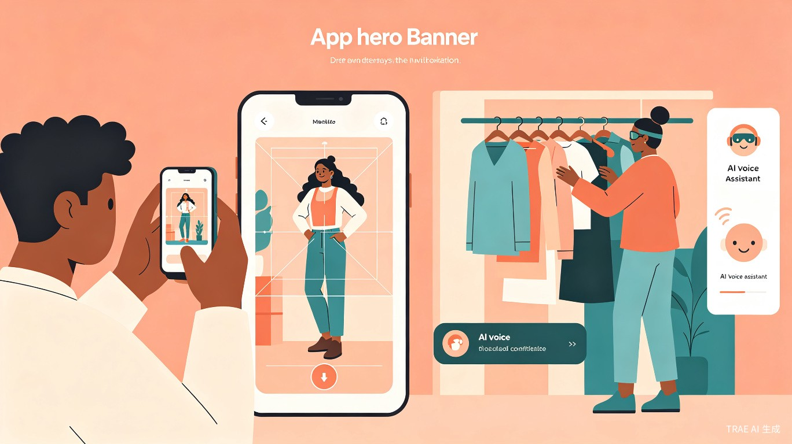
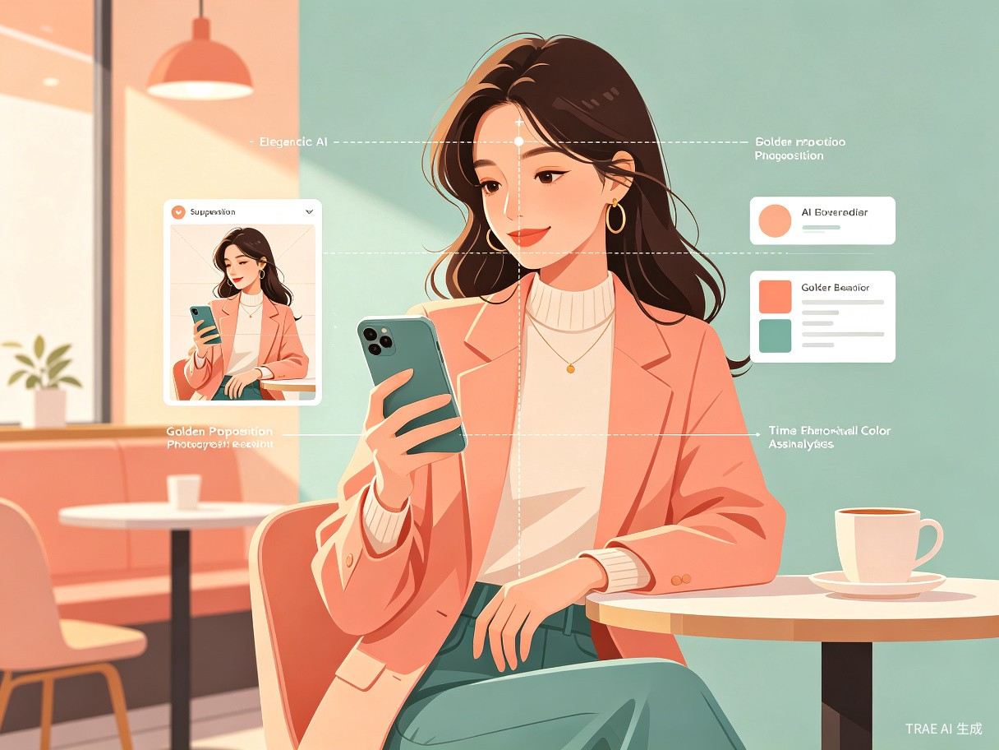
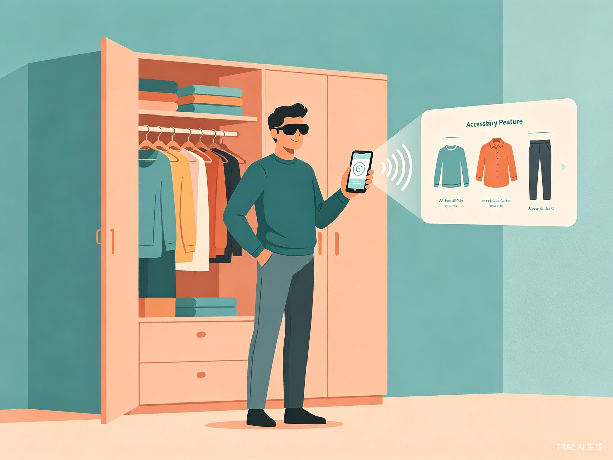

用 AI 技术同时实现「美的传递」与「平等的便利」，让每个人都能自信记录生活、体面出门
一款集成了 AI 姿势指导、自动构图、穿搭妆容建议，并具备衣物语音识别辅助功能的综合性智能 App。
实时识别用户姿态，提供自然、优雅的姿势建议，告别僵硬摆拍，让每一张照片都充满生命力。
智能分析场景与主体，实时叠加构图辅助线，帮助用户轻松掌握三分法、对称构图等经典技巧。
基于场景、天气与个人风格，智能推荐穿搭与妆容方案，让整体造型更加和谐出彩。
专为视障群体设计，通过语音交互识别衣物颜色、款式与搭配，赋予独立穿搭的尊严与自由。
灵感源于观察到大众对高质量社交影像的迫切需求，以及视障朋友在「穿衣出门」这一日常小事上面临的巨大隐形障碍。
「美」不应该有门槛，「便利」不应该有盲区。我们希望用 AI 技术同时实现美的传递与平等的便利，让科技真正服务于每一个人。
普通用户在拍照时常常面临姿势僵硬、构图混乱、穿搭妆容不协调等问题，导致废片率高、出片效率低。

视障/弱视人群在独立挑选出门衣物时，缺乏有效的视觉辅助与指导，完全依赖他人协助或盲目摸索。

核心用户包括热爱记录生活但缺乏摄影技巧的年轻群体，以及需要独立生活辅助的视障/弱视人群。
热爱旅游、探店、聚会的年轻用户，渴望在社交平台分享高质量影像，但缺乏专业摄影技巧，常常因废片率高而沮丧。
日常穿搭爱好者，希望快速判断整体造型是否和谐，需要即时的穿搭与妆容建议来提升分享内容的质感。
需要独立生活辅助的视障用户，在早晨出门前需要确认衣物颜色、款式及搭配是否得体，渴望自主完成穿搭准备。
视障用户的家人与朋友，希望通过科技手段帮助亲人提升生活独立性，减轻日常协助负担。
无论是旅行途中、聚会现场，还是清晨出门前的准备时刻，拍照搭子都能成为用户最贴心的智能助手。
在景点、餐厅、咖啡馆等场景下，实时获得姿势与构图指导，轻松拍出朋友圈高赞大片。
朋友聚会、生日派对等场合，快速捕捉自然生动的瞬间，不再错过每一个值得纪念的时刻。
出门前快速确认今日穿搭是否协调，根据天气与行程获得个性化穿搭建议。
视障用户通过语音交互，自主完成衣物识别与搭配确认，自信体面地走出家门。
拍照搭子不仅是一款摄影工具，更是一座连接「美」与「平等」的桥梁，兼具深远的社会意义与可观的商业潜力。
通过 AI 视觉识别与语音交互，打破了视障群体在「个人形象管理」上的数字鸿沟，赋予他们独立选择穿搭、自信出门的权利。
这是该产品最独特的护城河——体现了科技向善的无障碍关怀，让每个人都能平等地享受科技带来的便利与尊严。
采用「双轮驱动」模式，一方面通过免费或基础功能吸引海量 C 端大众用户，积累穿搭数据与用户活跃度。
精准的穿搭指导功能可自然衔接服装、美妆品牌的导购与转化，具备极高的商业变现潜力与品牌合作空间。
以用户增长与商业变现双轮驱动，构建可持续的产品生态。
通过免费或基础功能吸引海量年轻用户，覆盖旅游打卡、日常 OOTD 等高频场景，快速积累用户规模与穿搭数据，形成内容社区效应。
基于用户穿搭偏好与场景数据，精准推荐服装、美妆产品，自然衔接电商导购与品牌转化，实现从「内容」到「消费」的无缝闭环。